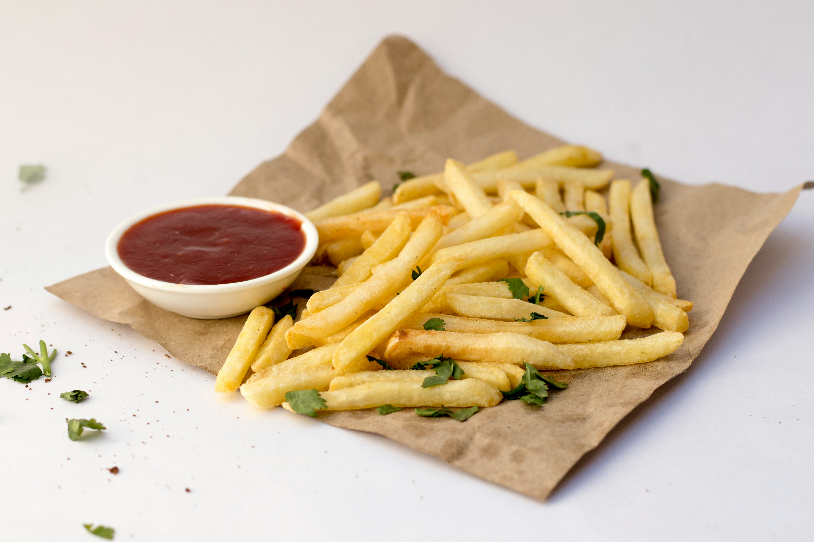

Crispy French Fries

Photo by
Pixzolo Photography
on
Unsplash
Golden and Crispy Potato Snack
French fries are crispy potato strips that make a perfect snack or side
dish.
They can be served with ketchup, mayonnaise, or your favorite dipping
sauce.
Ingredients
- 4 large potatoes
- Cooking oil
- Salt to taste
- Black pepper
- Paprika
Steps:
- Peel and cut the potatoes into thin strips.
- Soak the potato strips in cold water.
- Drain and dry the potatoes thoroughly.
- Heat oil in a deep pan.
- Fry the potatoes until golden and crispy.
- Drain on paper towels.
- Season with salt and spices.
- Serve immediately.